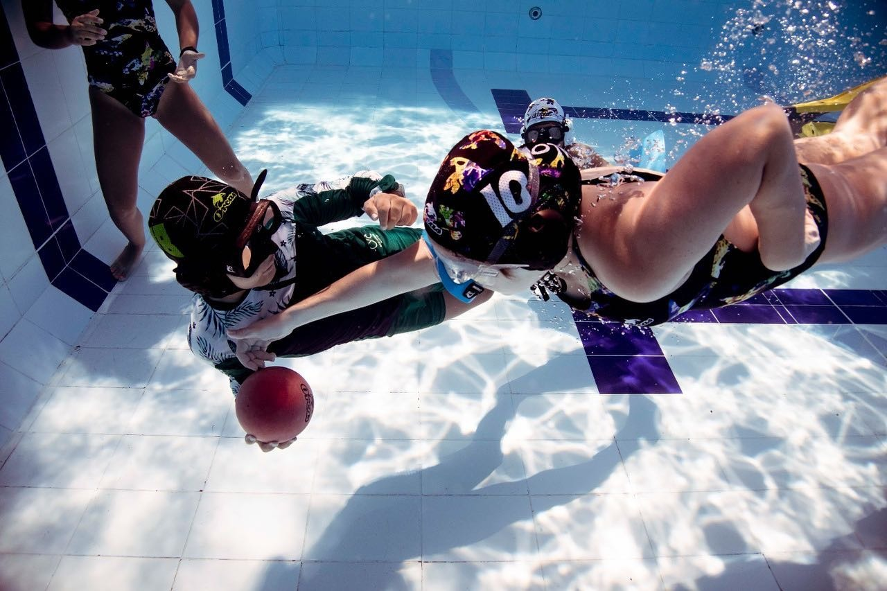
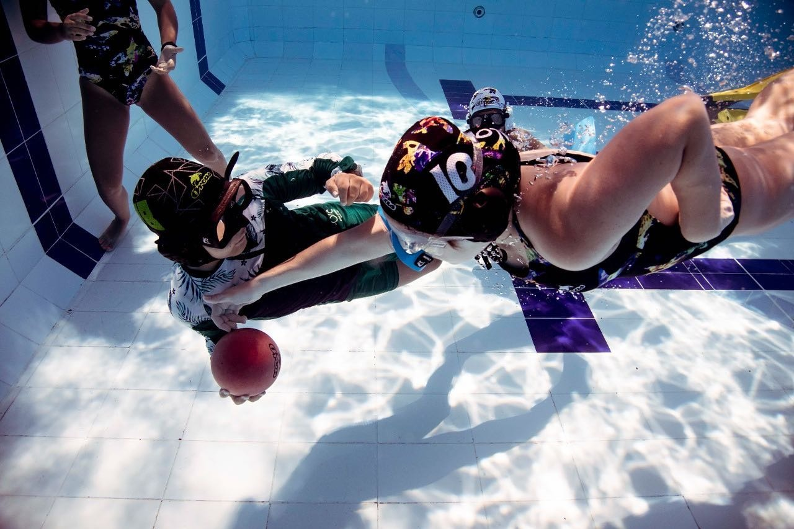
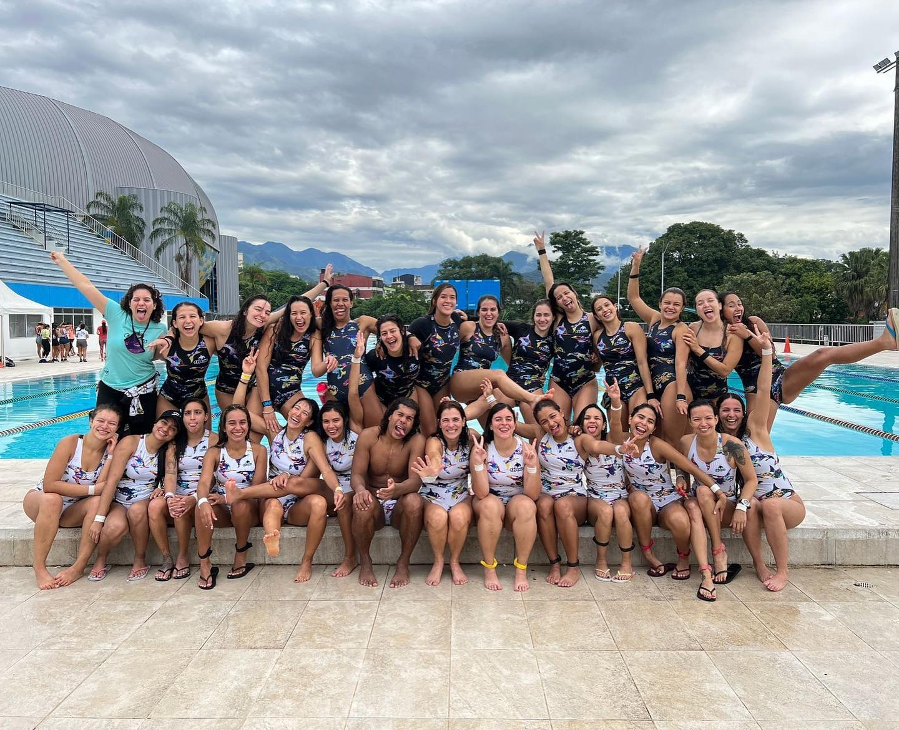

The Orcas Underwater Rugby Club is currently the largest club at the national and global level. It is composed of approximately 100 athletes of different ages. Internally, the club is divided into three categories:
-
Semilleros: Mixed beginners' group with members
aged 6 and above. They participate in the interclub
championships in the 'Promotion' and 'Nursery' categories. They
are not considered active club athletes since many of them do
not continue the club's training process.
 

-
Chapolas: Male and female categories, with members
between the ages of 15 and 40. Athletes in training, with an
intermediate level of play, participating in the interclub
championships in the 'Ascenso' category.


-
Elite: Male and female categories, with members
between the ages of 15 and 40. Athletes with an advanced level
of play who participate in the interclub championships in the
'Elite' category.


Orcas is more than just a sports club; it is a club of friends where its members find a space to engage in sports, form their circle of friendship, and learn not only about sports but also about life. The club's social purpose is to promote sports participation and encourage healthy habits among the residents of the Aburrá Valley
Nuestra impronta
In 2025, Orcas Club will become the most globally recognized Underwater Rugby Sports Club, not only for its sporting achievements but also for its commitment to the comprehensive development of individuals who can meet both sporting and personal challenges, with the aim of promoting a healthy lifestyle.
VisiónTo be the best choice for competitive and recreational underwater rugby. To train underwater rugby athletes with excellent technical and tactical skills while promoting respect, tolerance, and teamwork
ValoresRespect Tolerance Team work Healthy lifestyle